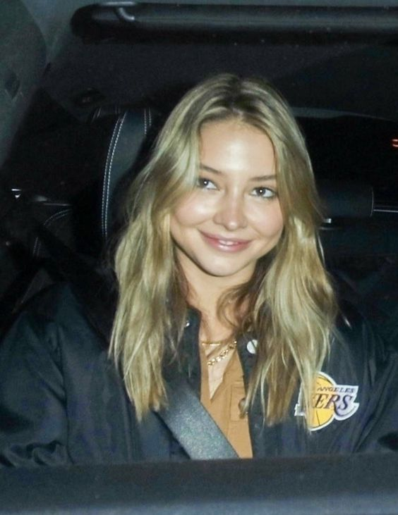
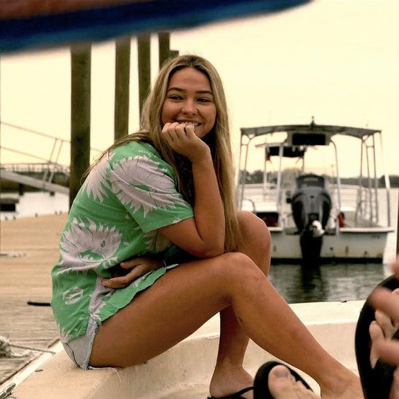
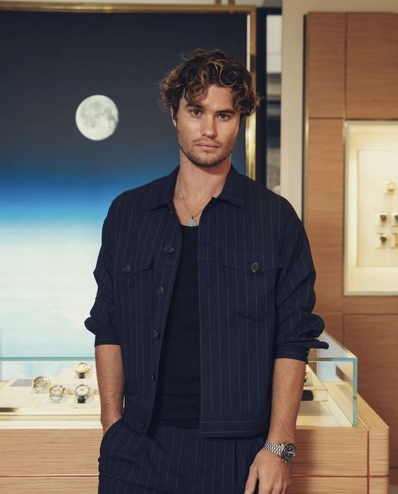
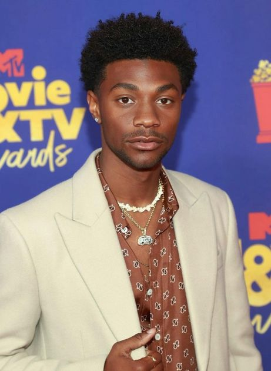
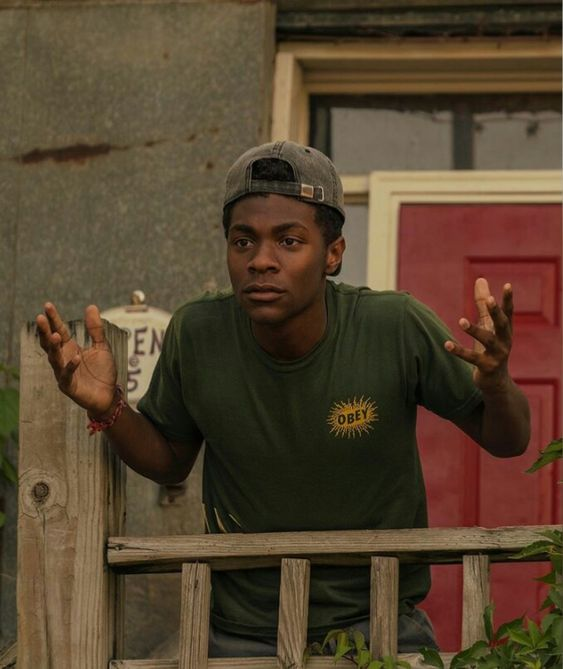
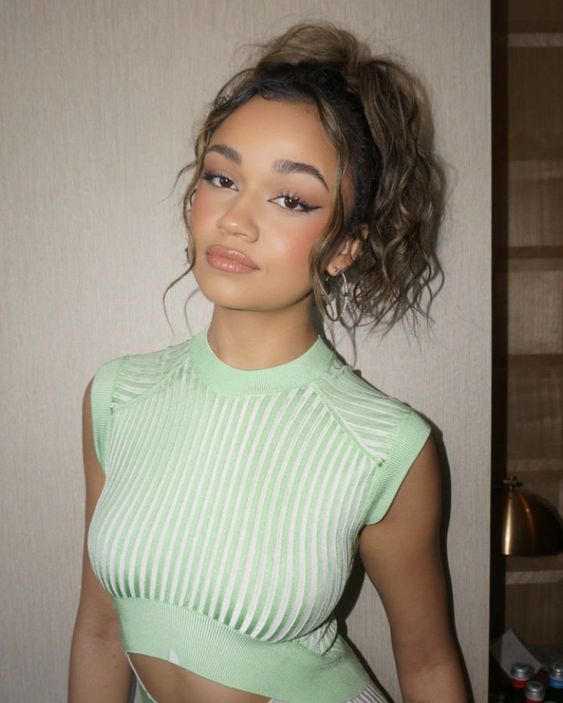
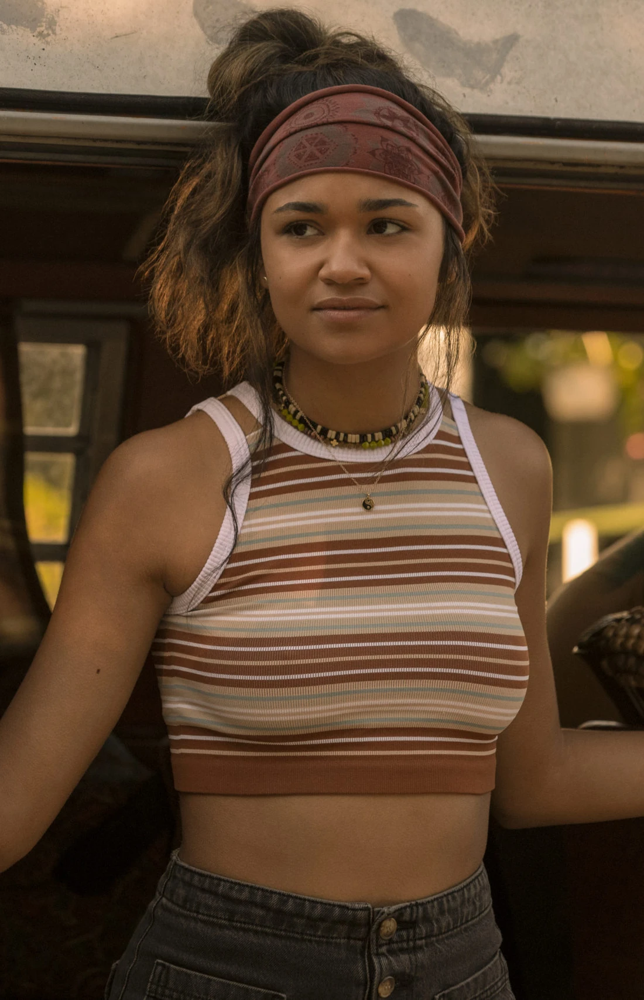
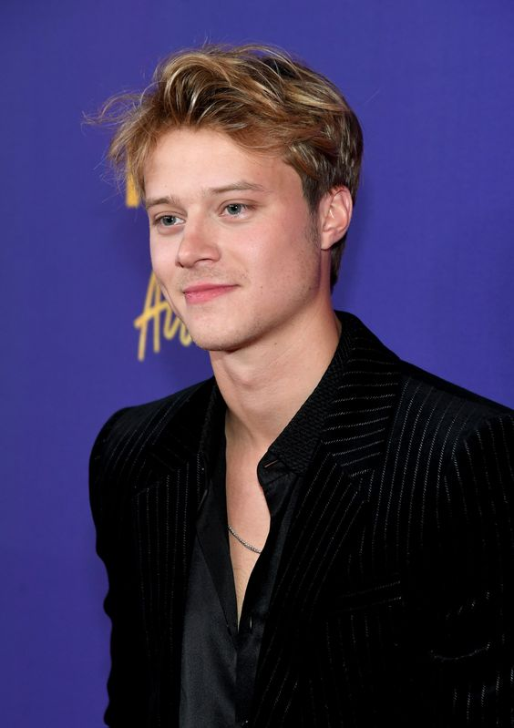
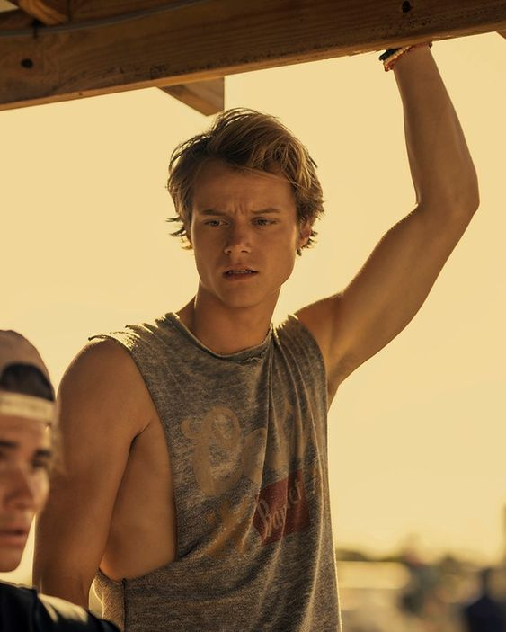

OQUE ACONTECE EM OUTER BANKS?
Outer Banks se passa em uma cidade costeira da Carolina do Norte, onde há uma divisão social gritante entre residentes ricos e moradores da classe trabalhadora (que tem os apelidos de "Kooks" e "Pogues"). Um grupo de adolescentes Pogue que moram no The Cut que estão tentando descobrir o que aconteceu com o pai desaparecido do líder do grupo, John B. Ao longo do caminho, eles descobrem um tesouro lendário que está ligado ao pai de John B. Perseguidos pela lei e por um rico grupo de Kooks, os Pogues buscam superar obstáculos como amor,luta, amizade e dinheiro.
EPISÓDIOS
1º episódio: Piloto
John B, Kiara, Pope e JJ são um grupo de amigos que vivem na Ilha Outer Banks. Ele iria para um lar adotivo porém começou um furacão. Após o furacão, o grupo de amigos pega o barco no pântano para pescar,eles acabaram avistando um barco afundado e quando mergulham para dar uma olhada, encontram uma chave que vai para um quarto no Summer Winds Motel. Quando JJ e John B entram na sala, encontram um cofre contendo um envelope, uma arma e centenas de dólares em dinheiro. Eles foram em uma festa e John B e Topper (um dos rivais dos Pogues) brigam. JJ puxa a arma tirada do quarto de hotel e ameaça Topper. John B pega emprestado equipamentos de mergulho de seu chefe. Ao sair eles são perseguidos e baleados por dois outros homens em um barco. Kiara joga uma rede que se enrosca no motor e permite que eles escapem.
2º episódio: Bússola da Sorte
John B traz de volta o equipamento de mergulho e é pego por Sarah. John B e JJ decidem tentar conversar com Lana, esposa de Scooter, para descobrir o significado da bússola. Quando eles chegaram, os dois homens que os perseguiam estavam gritando com Lana e jogando coisas ao redor. John B abre a bússola do pai e encontra a palavra Redfield gravada na letra de seu pai. Kiara e John B sobem no farol, onde um homem lhes diz onde ele acha que o mercadora fundou. Quando John B mostra a bússola, ele envia um rádio para o xerife. JJ e Pope se afastam, então Kiara e John B precisam correr a pé, mas acabam sendo pegos. Enquanto John B está correndo para casa, ele é perseguido pelos dois homens novamente. Ele tenta pular uma cerca, mas é eletrocutado devido a fios pendurados. John B decide dar a bússola ao xerife Peterkin. Quando John B chega em casa, ele olha para a árvore genealógica e percebe que o nome de solteira de sua bisavó é Redfield. John B, Kiara, JJ e Pope dirigem-se para o túmulo.
3º episódio: Zona Proibida
Kiara encontra um envelope no túmulo de Redfield contendo um mapa mostrando a localização do naufrágio do Mercador Real . Também no envelope está um gravador com o pai de John B falando. O pai de John B diz para ele terminar o que começou. Eles descobrem que existem 400 milhões de dólares no Merchant, então eles apresentam um plano para obtê-lo. Ward dá a Rafe dinheiro para comprar mais geradores de reserva, mas ele compra uma motocicleta. Rafe então vai à Barry's, para conseguir drogas para vender.O objetivo deles é conseguir um drone com uma câmera, para que eles possam tentar encontrar e explorar os destroços. JJ não tem o código correto para a fechadura e o cão de guarda vem na direção deles. O guarda de segurança percebe o que está acontecendo e ele os persegue. Pope e JJ fogem, mas John B fica e quebra a fechadura com um cano. Ele pega o drone enquanto JJ fala com o segurança, como ele o conhece. O segurança o deixa ir por causa disso. Mais tarde, um pescador encontra em suas redes os dois homens que estavam perseguindo a bússola. O xerife Peterkin é chamado para dar uma olhada. Enquanto Pope e JJ estão entregando mantimentos, Rafe e Topper pulam Pope. Em retaliação, Pope e JJ puxam o plugue do barco de Topper e ele afunda. O grupo inicia a busca com o drone sobre as coordenadas e eles encontram o navio a quase 1000 pés de profundidade.
4º episódio: Espiões
O grupo explora os destroços e percebe que o ouro não está lá. Quando John B chega em casa, Cheryl, da DCS, está esperando com um Thomas, um xerife, para levá-lo a um lar adotivo. Ele consegue escapar, soltando a foto do pai pela janela do carro e fugindo. Ele pega uma bicicleta, corre em uma corrente e a vira. Quando isso acontece, Sarah está andando e o encontra. Sarah leva John B para tirar a foto do pai e depois para a casa dela. Sarah e John B chegam ao Cameron's. Enquanto Sarah limpa a ferida, John B pergunta sobre um retrato na parede do escritório de seu pai. Ela explica que a pessoa é Denmark Tanny, e que ele criou Tannyhill. John B reconhece o nome e percebe que Tanny sobreviveu aos destroços. John B diz que precisa ir aos arquivos de Chapel Hill e Sarah decide ir com ele.
5º episódio: Festa de Verão
John B acredita que fez um grande avanço na busca pelo ouro, mas seu desejo de incluir Sarah na busca causa atritos entre os amigos.
6º episódio: Parcela 9
Uma lenda assustadora da ilha, uma amizade desolada e a nova situação de vida de John B mantêm a tripulação na ponta dos pés enquanto procuram o tesouro alto e baixo.
VOCÊ SABIA?
- Em Outer Banks encontramos uma pitadinha de Stranger Things:
Os atores Chase Stokes (John B) e Madelyn Cline (Sarah) fizeram participações na série. Chase era um dos amigos de Steve (em Stranger Things) na primeira temporada e Madelyn era uma das meninas apaixonadas por Billy (em Stranger Things).
- Mudança de Carolinas:
A série se passa na Carolina do Norte. Porém, devido a problemas judiciais relacionados ao desastre ambiental que aconteceu no local, as gravações tiveram que ser transferidas para a Carolina do Sul.
- Atmosfera Oitentista:
A série se passa nos tempos atuais, mas assim como “Riverdale”, “Outer Banks” traz um ar bem característico dos anos 80 e 90, investindo nas cores, falas e figurinos que lembram essa período.
- O local existe:
Para ficar mais interessante, a série traz um local que realmente existe na Carolina do Norte. A sequência de ilhas em formato de barreira é um destino turístico conhecido por sua grande extensão de praia aberta.
- OBX
Se você ainda não sabe o significado dessa sigla… OBX é a abreviação de Outer Banks. A sigla é muito usada para identificação do local.
ELENCO
SARAH CAMERON
Sarah é uma mulher independente e gentil, ela luta contra as convenções sociais de onde vive, mesmo que isso signifique ir contra sua família. Sarah era uma amiga distante de Kiara e entrou pra turma após John B pedir sua ajuda em uma missão.
 JOHN B
Ele é o líder carismático da tripulação dos Pogues . Seu pai desapareceu enquanto tentava salvar um navio naufragado , e ele não vai parar até descobrir os segredos por trás de seu desaparecimento. John B convence seus amigos a se juntarem a ele na busca épica por seu pai e pelo que seu pai estava procurando, levando-os em uma aventura de verão que mudará suas vidas, com obstáculos bons e ruins ao longo do caminho.

POPE
Ele é o mais inteligente dos Pogues e tem uma bolsa de estudos em jogo, sua passagem para uma vida fora de Outer Banks. John B descreve Pope como “o cérebro da operação”. Embora Pope esteja sempre pronto para uma aventura com seus amigos, ele também é a voz cautelosa do grupo.
 KIARA
Kiara pode parecer e agir como uma Pogue, mas sua família vem, do lado mais rico da ilha. Embora Kiara venha do lado mais rico da ilha, ela ainda está no centro dos Pogues. Ela está cansada do estilo de vida Kook, e deseja viver a vida com mais liberdade, o que ela vê nos The Pogues .
 JJ MAYBANK
JJ é o canhão solto em The Pogues . Ele é o mais recente de uma “longa linha de pescadores, bebedores e caçadores de vingança que viviam da água”. Ele é agressivo e temperamental, mas está sempre pronto para rir e se aventurar. Ele às vezes é um risco, mas também é corajoso e leal ao extremo, sempre pronto para cuidar e defender seus amigos a qualquer momento.
 